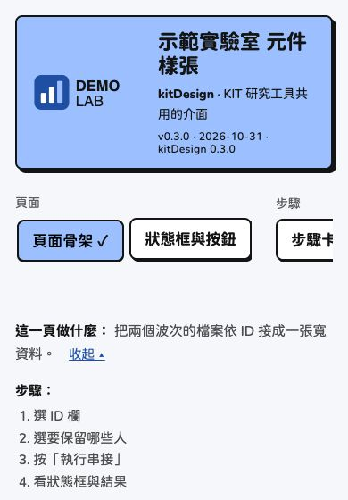

By default kitDesign has the KIT look: a lime header, KIT-green links, and the bean logo. When another project or lab uses it, only the logo and colors change; typeface, borders, shadows, components, and writing rules follow the design language. (Since kitDesign 0.3.0.)
KIT and the demo brand
Top: KIT. Bottom: a blue demo brand.


Phone (390px wide):


To see it on your own computer:
kit_gallery(brand = "demo").
Set it once for the whole app
When the app starts (for example at the top of app.R, or
inside run_app()):
options(kitDesign.brand = kit_brand(
"示範實驗室", # "Demo Lab"
logo = "logo.svg", # header logo: SVG or PNG
mark = "mark.svg", # small icon for the browser tab (square); uses logo if not given
colors = list(accent = "#9cc0ff", primary = "#1f4fa3", page = "#f5f7fa")
))After that, kit_page(), kit_header(),
kit_theme(), kit_colors(),
kit_chart_sequential(), and kit_plotly_style()
all use this brand. For a single page only:
kit_page(..., brand = kit_brand(...)).
kit_brand() with no arguments is KIT, and pages look
exactly the same as before.
kit_brand("示範實驗室", colors = list(accent = "#9cc0ff", primary = "#1f4fa3"))
#> <kit_brand> 示範實驗室
#> logo: none (alt: 示範實驗室 標誌)
#> mark: none
#> colors (* = not KIT):
#> ink #141414
#> page #faf7f0
#> card #ffffff
#> accent #9cc0ff *
#> accent_light #d4e2ff *
#> primary #1f4fa3 *
#> primary_hover #1f3b77 *
#> success #b9f0a8
#> warning #ffde59
#> danger #ff9b8f
#> info #a8dcffColors you can change
| Name | CSS variable | KIT | Used for |
|---|---|---|---|
accent |
--nb-lime |
#c6d033 |
Main color blocks: header, primary button, current tab |
accent_light |
--nb-bg-new |
#e8f0a0 |
Light main color: new columns in diagrams, light end of color scales |
primary |
--nb-green |
#006835 |
Links, checkboxes, progress bars, dark end of color scales |
primary_hover |
--nb-green-hover |
#004d27 |
Link hover |
ink |
--nb-ink |
#141414 |
Text, borders, shadows |
page |
--nb-page |
#faf7f0 |
Page background |
card |
--nb-card |
#ffffff |
Cards, inputs, tables |
success |
--nb-mint |
#b9f0a8 |
【完成】 (Done) |
warning |
--nb-yellow |
#ffde59 |
【完成，但請注意】 (Done, but take note) |
danger |
--nb-salmon |
#ff9b8f |
【停下來】 (Stopped), danger button |
info |
--nb-sky |
#a8dcff |
Info callout |
- Usually you only need to change
accentandprimary. If you give onlyaccent,accent_lightis computed; if you give onlyprimary,primary_hoveris computed. - A misspelled name stops with an error that lists the names you can use.
- Text on color blocks is always
ink:inkonaccentand on the four status colors must be clear enough (contrast at least 4.5:1);primaryis the link text color and must also reach 4.5:1 onpage. - It is best not to change the four status colors; if you do, their meaning must not change (done, take note, stop, info).
- Grays, the focus ring, and the chart categorical colors (Okabe–Ito, colorblind-friendly) do not change with the brand.
Logo
-
logo: the full logo in the header. Its height is fixed (5.6rem on computers, 3.6rem on phones); the width follows the aspect ratio. -
mark: the small icon in the browser tab. Square; SVG is sharpest. - The files are read when
kit_brand()is called; in Shiny they are served by a dependency that contains only these two files (the folder they live in is not exposed). For a single HTML file without Shiny, usekit_header(logo = "inline"). - The alt text defaults to “
標誌” (“ logo”); change it with logo_alt =. No logo:logo = FALSE.
Chart color scales
Heat map color scales follow the brand: very light
accent_light → accent_light →
primary.
kit_chart_sequential(kit_brand("示範", colors = list(accent = "#9cc0ff", primary = "#1f4fa3")))
#> [[1]]
#> [[1]][[1]]
#> [1] 0
#>
#> [[1]][[2]]
#> [1] "#EBF1FF"
#>
#>
#> [[2]]
#> [[2]][[1]]
#> [1] 0.2
#>
#> [[2]][[2]]
#> [1] "#D4E2FF"
#>
#>
#> [[3]]
#> [[3]][[1]]
#> [1] 0.4
#>
#> [[3]][[2]]
#> [1] "#ABBAE7"
#>
#>
#> [[4]]
#> [[4]][[1]]
#> [1] 0.6
#>
#> [[4]][[2]]
#> [1] "#8394D0"
#>
#>
#> [[5]]
#> [[5]][[1]]
#> [1] 0.8
#>
#> [[5]][[2]]
#> [1] "#5770B9"
#>
#>
#> [[6]]
#> [[6]][[1]]
#> [1] 1
#>
#> [[6]][[2]]
#> [1] "#1F4FA3"